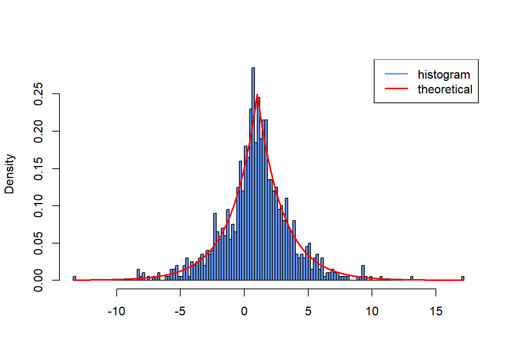
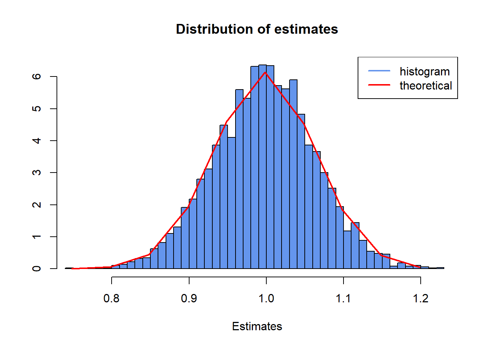
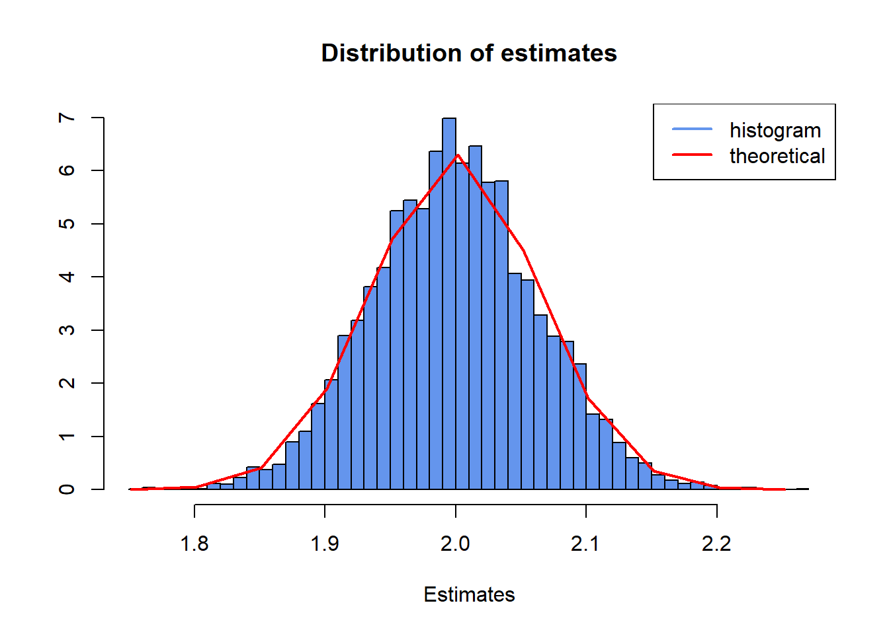

23 Retake exam 2022
23.1 Problem 1:
Begin by setting the seed to 134.
- Use the inversion method to simulate data from a Laplace distribution with the location \(\mu = 1\) and the scale \(\sigma = 2\) parameters. The inverse CDF is given as \[ F^{-1}(U) = \mu - \sigma \text{sign}(U-0.5) \ln(1-2|U-0.5|) \] and we wish to simulate \(N = 5000\) samples of length \(T = 1000\). sign is the sign function built in R. Write a function,
fn_Laplace, which simulates and returns the \(T \times N\) matrixmXas output for given values \(\mu\) and \(\sigma\).
Solution:
- The density function of the Laplace distribution is given as \[ f(X) = \frac{1}{2\sigma} \exp\left(-\frac{|X-\mu|}{\sigma}\right) \] Pick the first column of the matrix
mXand create a histogram and superimpose the theoretical density in red. Setbreaks = 200in your call tohist().
Solution:
fLapDen <- function(dMu, dSigma, x) {
return(1 / (2 * dSigma) * exp(-abs(x - dMu) / dSigma))
}
hist(mX[, 1],
freq = FALSE,
breaks = 200,
col = "cornflowerblue",
xlab = "",
ylab = "Density",
main = "",
xlim = c(min(mX[, 1]), max(mX[, 1])))
vX <- seq(min(mX[, 1]), max(mX[, 1]), by = 0.05)
lines(vX, fLapDen(dMu = 1, dSigma = 2, vX), type = "l", col = "red", lwd = 2)
legend("topright",
legend = c("histogram", "theoretical"),
col = c("cornflowerblue", "red"),
lwd = 2)
- The maximum likelihood estimates of the parameters are given as \[ \hat{\mu} = \text{median}(X) \] \[ \hat{\sigma} = \frac{1}{T} \sum_{t=1}^T |X_t - \hat{\mu}| \] Write a function,
fn_estimateLaplace, which estimates \(\hat{\mu}\) and \(\hat{\sigma}\) for each column inmX. Save the resulting 5000 estimates in vectorsvMuandvSigma. However, your function must NOT use the built-in functionsabsandmedian. You must compute the median of the absolute value of each column without using those two functions.
Solution:
fn_estimateLaplace <- function(mInput) {
fTempMed <- function(vX) {
return(sort(vX, decreasing = FALSE)[ceiling(length(vX) / 2)])
}
fSigmaCal <- function(vX) {
vOut <- ifelse(vX - fTempMed(vX) < 0, (vX - fTempMed(vX)) * -1, vX - fTempMed(vX))
return(mean(vOut))
}
return(list(
vMu = apply(mInput, 2, fTempMed),
vSigma = apply(mInput, 2, fSigmaCal)
))
}
vMu <- fn_estimateLaplace(mX)$vMu
vSigma <- fn_estimateLaplace(mX)$vSigma- Create two histograms of the estimates \(\hat{\sigma}\) and \(\hat{\mu}\) contained in the vectors
vSigmaandvMu. Setbreaks = 50andfreq = F. Let the title of the plot be “Distribution of estimates” and set the label on the x-axis to “Estimates”. Add a density plot to the histogram you have just created. Assume \(\hat{\sigma}\) and \(\hat{\mu}\) are Gaussian and use the empirical mean and standard deviation of the calculations invSigmaandvMuas the parameters. Superimpose the density plot on the histogram withlines().
Solution:
hist(vMu,
freq = FALSE,
breaks = 50,
col = "cornflowerblue",
xlab = "Estimates",
ylab = "",
main = "Distribution of estimates",
xlim = c(min(vMu), max(vMu)))
vX <- seq(min(vMu), max(vMu), by = 0.05)
lines(vX, dnorm(vX, mean = mean(vMu), sd = sd(vMu)), type = "l", col = "red", lwd = 2)
legend("topright",
legend = c("histogram", "theoretical"),
col = c("cornflowerblue", "red"),
lwd = 2)
hist(vSigma,
freq = FALSE,
breaks = 50,
col = "cornflowerblue",
xlab = "Estimates",
ylab = "",
main = "Distribution of estimates",
xlim = c(min(vSigma), max(vSigma)))
vX <- seq(min(vSigma), max(vSigma), by = 0.05)
lines(vX, dnorm(vX, mean = mean(vSigma), sd = sd(vSigma)), type = "l", col = "red", lwd = 2)
legend("topright",
legend = c("histogram", "theoretical"),
col = c("cornflowerblue", "red"),
lwd = 2)
- The variance of the Laplace distribution is given as \[ \text{var}(X) = 2\sigma^2 \] Write a function,
fn_estimateVariance, which defines \(\text{var}(X)\) for each columnmXby calculating its empirical variance. Define \(\text{var}(X) = 2\sigma^2\) and calculate its mean and standard deviation.
Solution:
23.2 Problem 2: (Constrained) Optimization, C++, and Packaging
Note: This problem is best solved in order from 1 - 6.
In this problem, you are supposed to work with the vDATA.r file provided with the exam. It contains the daily stock returns for the stocks of Danske Bank from 9 June 2016 to 9 March 2021 traded on the Copenhagen Stock Exchange. In the following, we denote \(r_t\) as the return of Danske Bank at time period \(t\).
- Load the data file
vDATA.rinto your R workspace usingreadRDS(). You want to model the volatility of the stock. You assume that, for all periods \(t=1, \dots, T\), the stock return \(r_t\) is generated by a simple scale model \[ r_t = \varepsilon_t \sigma_t \] with conditional variances each following a zero drift GARCH(2,1) process \[ \sigma_t^2 = \alpha_1 r_{t-1}^2 + \alpha_2 r_{t-2}^2 + \beta \sigma_{t-1}^2 \] and independent \(\varepsilon_t\) following some distribution conditional on the information from all previous periods (denoted as \(F_{t-1}\)) according to density function \(f(\cdot|F_{t-1}; \theta)\). \(\theta\) denotes the parameters of the distribution (to be specified later). The likelihood function of the returns is then given by \[ L(\mu, \alpha, \beta, \theta) = \prod_{t=1}^T \frac{1}{\sigma_t} f(r_t/\sigma_t | F_{t-1}; \theta) \]
Solution:
generate_sample_garch_data <- function(num_observations = 1200,
burn_in_period = 200,
alpha1_sim = 0.10,
alpha2_sim = 0.10,
beta_sim = 0.80,
nu_sim = 5,
initial_sigma2 = (0.01)^2,
seed = 42) {
if (!is.null(seed)) {
set.seed(seed)
}
total_length = num_observations + burn_in_period
# --- Parameter Validation ---
if (alpha1_sim < 0 || alpha2_sim < 0 || beta_sim < 0) {
stop("GARCH parameters (alpha1, alpha2, beta) must be non-negative.")
}
# The problem later constrains alpha1+alpha2+beta=1.
# For simulation, stationarity usually requires alpha1+alpha2+beta < 1 if an intercept omega > 0 exists.
# Here, omega=0. If alpha1+alpha2+beta >= 1, it's an IGARCH or explosive process.
# The chosen defaults sum to 1 (IGARCH), which is common for financial data.
if (nu_sim <= 2) {
stop("Degrees of freedom 'nu_sim' for t-distribution must be > 2 for finite variance.")
}
if (initial_sigma2 <= 0) {
stop("Initial variance 'initial_sigma2' must be positive.")
}
# --- Initialize Vectors ---
r_t <- numeric(total_length) # Vector for returns
sigma2_t <- numeric(total_length) # Vector for conditional variances
# --- Generate Standardized t-distributed Innovations (mean 0, variance 1) ---
# A standard t-distribution with nu degrees of freedom has variance nu / (nu - 2).
innovations <- rt(total_length, df = nu_sim) * sqrt((nu_sim - 2) / nu_sim)
# --- Set Initial Values ---
# For GARCH(2,1): sigma_t^2 = alpha1*r_{t-1}^2 + alpha2*r_{t-2}^2 + beta*sigma_{t-1}^2
# We need to bootstrap the process for the first few periods.
# Period 1:
sigma2_t[1] <- initial_sigma2
r_t[1] <- innovations[1] * sqrt(sigma2_t[1])
# Period 2:
# sigma_2^2 depends on r_1^2, r_0^2, sigma_1^2.
# Assume r_0 = 0 (or its squared value is negligible or absorbed into an effective initial sigma).
# So, sigma_2^2 = alpha1*r_1^2 + beta*sigma_1^2 (alpha2*r_0^2 term is zero)
sigma2_t[2] <- alpha1_sim * r_t[1]^2 + beta_sim * sigma2_t[1]
if (sigma2_t[2] <= 1e-9) sigma2_t[2] <- 1e-9 # Floor variance
r_t[2] <- innovations[2] * sqrt(sigma2_t[2])
# --- Simulate GARCH(2,1) Process ---
for (t in 3:total_length) {
sigma2_t[t] <- alpha1_sim * r_t[t-1]^2 +
alpha2_sim * r_t[t-2]^2 +
beta_sim * sigma2_t[t-1]^2
# Ensure variance remains positive (numerical stability)
if (sigma2_t[t] <= 1e-9) {
sigma2_t[t] <- 1e-9 # Floor variance to prevent issues like sqrt(negative)
}
r_t[t] <- innovations[t] * sqrt(sigma2_t[t])
}
# --- Discard Burn-in Period ---
sample_returns <- r_t[(burn_in_period + 1):total_length]
# Final check for non-finite values (e.g. if sigma2_t became 0 or negative despite floor)
if(any(!is.finite(sample_returns))){
warning("Non-finite values were generated in sample_returns. This might indicate issues with parameters or initialization. Non-finite values replaced with 0.")
sample_returns[!is.finite(sample_returns)] = 0
}
return(sample_returns)
}
vDATA <- generate_sample_garch_data(
num_observations = 1197,
alpha1_sim = 0.10,
alpha2_sim = 0.10,
beta_sim = 0.80, # Note: alpha1+alpha2+beta = 1.0 (IGARCH process)
nu_sim = 5,
seed = 123 # For reproducibility
)- Write an R function that returns the average negative log-likelihood function of the model above for periods \(t=2,3,\dots,T\) for an arbitrary, user-specified density function \(f(\cdot)\). The R function should have the following inputs:
- A vector of parameters collecting all the GARCH parameters \((\alpha_1, \alpha_2, \beta)\) and the conditional density parameters \(\theta\),
- a time-series of length \(T\),
- a flexible function object for the density \(f(\cdot)\) with default
rnorm. Hint: Initialize the conditional variance process at \(t=1\) with \(\sigma_1^2\) equal to the unconditional variance of your returns.
Solution:
fAvgNegLogLik <- function(vParams, vR, f = rnorm) {
dAlpha1 <- vParams[1]
dAlpha2 <- vParams[2]
dBeta <- vParams[3]
vDensParams <- vParams[4:length(vParams)]
dT <- length(vR)
dSum <- 0
vSigma2 <- numeric(dT)
vSigma2[1] <- var(vR)
vSigma2[2] <- dAlpha1 * vR[1]^2 + dBeta * vSigma2[1]
for (t in 3:dT) {
vSigma2[t] <- dAlpha1 * vR[t-1]^2 + dAlpha2 * vR[t-2]^2 + dBeta * vSigma2[t-1]
dSum <- dSum - log(sqrt(vSigma2[t])) + log(do.call(f, as.list(c(vR[t]/sqrt(vSigma2[t]), vDensParams))))
}
return(-dSum / (dT - 1))
}- Write another R function that uses the function in (2.) to return the average negative log-likelihood function of a reparameterized version of the model above for periods \(t=2,3,\dots,T\) assuming a \(t\)-distribution with \(\nu\) degrees of freedom, i.e \[ f(\varepsilon_t | F_{t-1}) = \frac{\Gamma\left(\frac{\nu+1}{2}\right)}{\sqrt{\nu \pi} \Gamma\left(\frac{\nu}{2}\right)} \left(1 + \frac{\varepsilon_t^2}{\nu}\right)^{-\frac{\nu+1}{2}} \] It should have the following inputs:
- A vector of parameters collecting all the GARCH parameters and the conditional density parameters,
- a time-series of length \(T\), and fulfill the following constraints
- \(0 < \alpha_1 < 1\)
- \(0 < \alpha_2 < 1\)
- \(0 < \beta < 1\)
- \(\alpha_1 + \alpha_2 + \beta = 1\),
-
\(\nu > 2\). Note: You do not need to write a new likelihood function. Use 2. Hint: You can use
dt()to calculate the density of a t-distributed random variable in R. Or you can use the formula above withgamma()for the \(\Gamma\)-function in R.
Solution:
fAvgNegLogLikRep <- function(vParams, vR) {
dAlpha1 <- exp(vParams[1]) / (1 + exp(vParams[1]) + exp(vParams[2]))
dAlpha2 <- exp(vParams[2]) / (1 + exp(vParams[1]) + exp(vParams[2]))
dBeta <- 1 - dAlpha1 - dAlpha2
dNu <- 2 + exp(vParams[4])
vParams <- c(dAlpha1, dAlpha2, dBeta, dNu)
return(fAvgNegLogLik(vParams, vR, dt))
}- Use the BFGS algorithm with
optim()to find the maximizers of the reparameterized log-likelihood function in 3). Use starting values that correspond to the original likelihood parameters \[ \alpha_1 = 0.10, \alpha_2 = 0.10, \beta = 0.80, \nu = 5. \] Retransform your results. What are the estimates for \((\alpha_1, \alpha_2, \beta, \nu)\)?
Solution:
vParams <- c(0.1, 0.1, 0.8, 5)
# transform
dAlpha1 <- log(vParams[1] / (1 - vParams[1] - vParams[2]))
dAlpha2 <- log(vParams[2] / (1 - vParams[1] - vParams[2]))
dBeta <- vParams[3] # constraint ensured by functions
dNu <- log(vParams[4] - 2)
vParams <- c(dAlpha1, dAlpha2, dBeta, dNu)
optim_results <- optim(vParams, fAvgNegLogLikRep, vR = vDATA, method = "BFGS")
optim_results
#> $par
#> [1] -9.187285 -9.375245 0.800000 2.441869
#>
#> $value
#> [1] -8.964638
#>
#> $counts
#> function gradient
#> 38 33
#>
#> $convergence
#> [1] 0
#>
#> $message
#> NULL
vParams <- optim_results$par
dAlpha1 <- exp(vParams[1]) / (1 + exp(vParams[1]) + exp(vParams[2]))
dAlpha2 <- exp(vParams[2]) / (1 + exp(vParams[1]) + exp(vParams[2]))
dBeta <- 1 - dAlpha1 - dAlpha2
dNu <- 2 + exp(vParams[4])
print(paste0("Est. Alpha1: ", dAlpha1, " vs act.: ", 0.1))
#> [1] "Est. Alpha1: 0.00010231320414325 vs act.: 0.1"
print(paste0("Est. Alpha2: ", dAlpha2, " vs act.: ", 0.1))
#> [1] "Est. Alpha2: 8.47815778203704e-05 vs act.: 0.1"
print(paste0("Est. Beta: ", dBeta, " vs act.: ", 0.8))
#> [1] "Est. Beta: 0.999812905218036 vs act.: 0.8"
print(paste0("Est. Nu: ", dNu, " vs act.: ", 5))
#> [1] "Est. Nu: 13.4945084264308 vs act.: 5"Sanity check:
suppressMessages(library(rugarch))
#> Warning: pakke 'rugarch' blev bygget under R version 4.3.3
spec_fit_rugarch <- ugarchspec(
variance.model = list(model = "sGARCH", garchOrder = c(2, 1)), # ARCH(2)
mean.model = list(armaOrder = c(0, 0), include.mean = FALSE), # Estimate mu
distribution.model = "std"
)
# Fit the model using rugarch
fit_rugarch <- ugarchfit(spec = spec_fit_rugarch, data = vDATA, solver = "nloptr") # or "nloptr"
print("--- rugarch Results ---")
#> [1] "--- rugarch Results ---"
print(fit_rugarch)
#>
#> *---------------------------------*
#> * GARCH Model Fit *
#> *---------------------------------*
#>
#> Conditional Variance Dynamics
#> -----------------------------------
#> GARCH Model : sGARCH(2,1)
#> Mean Model : ARFIMA(0,0,0)
#> Distribution : std
#>
#> Optimal Parameters
#> ------------------------------------
#> Estimate Std. Error t value Pr(>|t|)
#> omega 0.000000 0.000000 0.048587 0.96125
#> alpha1 0.000071 0.022045 0.003227 0.99743
#> alpha2 0.000256 0.022012 0.011636 0.99072
#> beta1 0.969460 0.002236 433.632645 0.00000
#> shape 4.974784 0.730757 6.807711 0.00000
#>
#> Robust Standard Errors:
#> Estimate Std. Error t value Pr(>|t|)
#> omega 0.000000 0.000000 0.000812 0.999352
#> alpha1 0.000071 0.051016 0.001394 0.998887
#> alpha2 0.000256 0.294820 0.000869 0.999307
#> beta1 0.969460 0.307556 3.152144 0.001621
#> shape 4.974784 8.785449 0.566253 0.571222
#>
#> LogLikelihood : 10763.72
#>
#> Information Criteria
#> ------------------------------------
#>
#> Akaike -17.976
#> Bayes -17.955
#> Shibata -17.976
#> Hannan-Quinn -17.968
#>
#> Weighted Ljung-Box Test on Standardized Residuals
#> ------------------------------------
#> statistic p-value
#> Lag[1] 0.1481 0.7004
#> Lag[2*(p+q)+(p+q)-1][2] 0.9820 0.5041
#> Lag[4*(p+q)+(p+q)-1][5] 2.1393 0.5859
#> d.o.f=0
#> H0 : No serial correlation
#>
#> Weighted Ljung-Box Test on Standardized Squared Residuals
#> ------------------------------------
#> statistic p-value
#> Lag[1] 0.005858 0.9390
#> Lag[2*(p+q)+(p+q)-1][8] 0.966063 0.9763
#> Lag[4*(p+q)+(p+q)-1][14] 3.722254 0.9052
#> d.o.f=3
#>
#> Weighted ARCH LM Tests
#> ------------------------------------
#> Statistic Shape Scale P-Value
#> ARCH Lag[4] 0.5723 0.500 2.000 0.4494
#> ARCH Lag[6] 0.7583 1.461 1.711 0.8178
#> ARCH Lag[8] 0.8049 2.368 1.583 0.9508
#>
#> Nyblom stability test
#> ------------------------------------
#> Joint Statistic: 280.0863
#> Individual Statistics:
#> omega 77.26025
#> alpha1 0.27309
#> alpha2 0.22811
#> beta1 0.16494
#> shape 0.03994
#>
#> Asymptotic Critical Values (10% 5% 1%)
#> Joint Statistic: 1.28 1.47 1.88
#> Individual Statistic: 0.35 0.47 0.75
#>
#> Sign Bias Test
#> ------------------------------------
#> t-value prob sig
#> Sign Bias 0.3901 0.6965
#> Negative Sign Bias 0.1214 0.9034
#> Positive Sign Bias 0.2282 0.8195
#> Joint Effect 0.5120 0.9163
#>
#>
#> Adjusted Pearson Goodness-of-Fit Test:
#> ------------------------------------
#> group statistic p-value(g-1)
#> 1 20 12.41 0.8675
#> 2 30 24.38 0.7101
#> 3 40 28.03 0.9041
#> 4 50 39.97 0.8178
#>
#>
#> Elapsed time : 0.886915- Write a C++ function named “CppGfunc” with two inputs i) a numerical vector \(x\) and an arbitrary R function \(g(\cdot)\) with no default. It should return \(g(x)+2\).
Solution:
// [[Rcpp::depends(RcppArmadillo)]]
#include <RcppArmadillo.h>
using namespace arma;
using namespace Rcpp;
// [[Rcpp::export]]
arma::vec CppGfunc(Function g, arma::vec x) {
arma::vec vOut = zeros<vec>(x.size());
for (arma::uword i = 0; i < x.size(); i++) {
SEXP s;
s = g(x[i]);
vOut[i] = as<double>(s) + 2.0;
}
return(vOut);
}suppressMessages(library(Rcpp))
#> Warning: pakke 'Rcpp' blev bygget under R version 4.3.3
suppressMessages(library(RcppArmadillo))
#> Warning: pakke 'RcppArmadillo' blev bygget under R version 4.3.3
sourceCpp("exam2022recpp.cpp")CppGfunc(function(x) x^2, c(1,2,3))
#> [,1]
#> [1,] 3
#> [2,] 6
#> [3,] 11- Create an R package that contains the functions from 2.) and 5.) and edit the title description to “This is my exam package”. Export the package as a bundled development version. Remark: If you cannot solve 2.) or 5.) create a package that contains an R and a C++ function with single scalar inputs that always return the number 17.